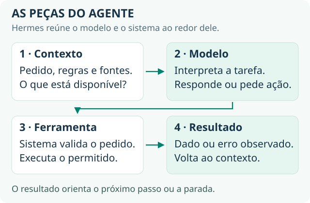

02 · Entenda o modelo dentro do seu agente
← Consulta anterior · Aulas · Próxima consulta →
Use nas entregas 1 e 2: entender o agente e dar a ele as informações certas.
Ao terminar: você saberá separar modelo, instrução e contexto — e terá comparado duas maneiras de pedir a mesma tarefa.
Um LLM é um modelo de linguagem: ele recebe uma entrada e produz uma resposta. O agente é o sistema que usa esse modelo junto de instruções, dados e ferramentas. O Hermes oferece uma estrutura pronta para reunir essas peças, como você verá também na consulta sobre ferramentas.

Ampliar o desenho ↗O modelo participa das decisões; o sistema ao redor permite consultar dados, executar ações e guardar resultados.
Três ideias para usar agora
- Prompt é o que orienta a resposta. Diga qual é a tarefa, qual resultado espera e o que fazer se faltar informação.
- Contexto é a informação disponível nessa interação. Inclui a conversa, documentos e resultados de ferramentas que o sistema fornece ao modelo.
- Uma resposta convincente pode estar errada. Quando o modelo apresenta informação incorreta ou sem apoio de forma plausível, chamamos isso de alucinação. Confira os fatos e as ações.
Corrigir uma informação na conversa não é treinar novamente o modelo. O produto pode guardar histórico ou memória para reutilizar depois; isso também não significa que seus parâmetros foram alterados.
Faça no seu agente · 80% prática
- Escolha a tarefa da primeira entrega e escreva um pedido curto.
- Execute o pedido e guarde a resposta.
- Melhore o pedido com o resultado esperado, um exemplo ou uma informação que estava faltando.
- Repita com os mesmos casos e compare: ficou mais útil, correto e fácil de conferir?
Pode seguir quando: você reconhece o que mudou no pedido e mostra o efeito na resposta. Se usar IA para programar, peça uma mudança pequena e confira o resultado antes da próxima.
Estude para destravar · 20% teoria
A introdução de Generative AI for Beginners, da Microsoft, ajuda a entender modelos de linguagem. Use uma lição ligada à dúvida que apareceu no exercício. A matemática e a construção de modelos podem ficar para quando você quiser abrir essa parte do sistema.
Para aprofundar: treinamento, tokens, atenção e limites do modelo
Rede neural, treinamento e inferência
Uma rede neural transforma entradas em saídas usando operações organizadas em camadas. Seus parâmetros são valores numéricos ajustados durante o treinamento. Imagine uma mesa de som com muitos controles: cada ajuste muda como os sinais se combinam.
No treinamento, exemplos e um objetivo orientam o ajuste desses parâmetros. A função de perda mede o erro em relação ao objetivo. A retropropagação, ou backpropagation, calcula gradientes: medidas de como pequenas mudanças nos parâmetros afetam essa perda. Um otimizador usa essas medidas para ajustar os parâmetros e tentar reduzir o erro.
As GPUs, processadores capazes de realizar muitas operações numéricas em paralelo, ajudam nesse trabalho. Métodos, dados e capacidade de processamento permitiram treinar redes maiores. A história de AlexNet e ImageNet, na aula anterior, mostra essas peças trabalhando juntas. A série de 3Blue1Brown sobre retropropagação oferece uma explicação visual dos ajustes.
Na inferência, usamos os parâmetros aprendidos para produzir uma saída. Uma conversa comum não atualiza automaticamente os pesos do modelo a cada mensagem. O produto pode manter histórico ou memória, e o fornecedor pode ter políticas específicas de uso de dados; isso é diferente de o modelo aprender imediatamente com cada correção.
Escala e pós-treinamento
As leis de escala descrevem relações observadas em experimentos entre tamanho do modelo, quantidade de dados, capacidade de processamento e erro de previsão. O estudo de Kaplan e colaboradores encontrou regularidades nessas relações. Elas ajudam a planejar o treinamento nas condições estudadas. Para escolher um modelo para o agente, ainda é necessário comparar qualidade, custo e tempo nos seus próprios casos.
O pós-treinamento adapta um modelo já treinado a comportamentos desejados, como seguir instruções. No trabalho do InstructGPT, pesquisadores usaram demonstrações humanas para um ajuste supervisionado e avaliações de preferência para uma etapa de RLHF: aprendizado por reforço com feedback humano. Esse processo melhorou a preferência pelas respostas nas condições do estudo, mas os modelos continuaram cometendo erros. Uma resposta prestativa e uma resposta factual precisam de verificações próprias.
No projeto, essa distinção orienta uma decisão concreta: você pode usar um modelo já preparado para seguir instruções e concentrar o trabalho em contexto, ferramentas e avaliação. Corrigir uma informação no prompt não é executar essas etapas de treinamento novamente.
O que um LLM faz
Um modelo de linguagem estima continuações para uma sequência de pequenas unidades chamadas tokens, explicadas a seguir. Repetindo esse processo, produz textos, código e outros formatos de saída. O treinamento permite representar padrões da linguagem e conhecimentos; a resposta não vem automaticamente de uma consulta a uma fonte atualizada.
A data de corte do conhecimento, quando informada, orienta sobre a cobertura temporal de parte do treinamento. Não garante que o modelo saiba tudo antes dessa data. Busca e ferramentas podem trazer dados atuais durante uma execução, desde que o sistema realmente as use.
No agente de leads, pergunte separadamente: “o modelo interpreta esta mensagem?” e “o sistema tem a tabela de preços válida?”. A primeira é uma capacidade do modelo; a segunda exige uma fonte e um caminho de acesso.
Tokens e janela de contexto
Um token é uma unidade usada pelo modelo para representar a entrada e a saída. Pode corresponder a parte de palavra, palavra, pontuação ou outro elemento. A divisão depende do tokenizador, do idioma e do conteúdo. Use a contagem reportada pelo provedor; uma regra fixa de caracteres por token pode errar bastante.
A janela de contexto é o limite do que o modelo pode considerar em uma execução, com regras de capacidade que variam por modelo e API. Instruções, mensagens, resultados de ferramentas e documentos ocupam espaço; planeje também o espaço necessário à resposta.
Pense no contexto como uma mesa de trabalho. Você seleciona o que colocar sobre ela. Uma mesa maior permite incluir mais material, mas não garante que todo detalhe seja usado corretamente. Se a aplicação omite um dado importante ou o dilui em conteúdo irrelevante, a resposta pode piorar.
Transformer e atenção
O Transformer, apresentado em Attention Is All You Need, usa mecanismos de atenção para combinar informações de posições diferentes de uma sequência. Em “o cliente pediu a proposta porque ele estava com pressa”, as relações entre “ele”, “cliente” e o restante ajudam a construir uma representação da frase.
A arquitetura permitiu realizar mais operações em paralelo durante o treinamento e ganhou grande importância em modelos de linguagem. Ainda existem outras arquiteturas, e uma janela longa não garante o uso correto de todos os detalhes. Na geração autoregressiva, cada novo token depende da sequência que já existe.
Prompt, temperatura e respostas sem fundamento
O prompt reúne as entradas que orientam o modelo. Instruções de sistema ou de desenvolvedor definem o comportamento esperado; a mensagem do usuário traz a tarefa; documentos e ferramentas oferecem contexto. Guarde versões das instruções importantes: mudar o prompt pode mudar o comportamento do produto. A forma de enviar cada parte depende da interface usada para acessar o modelo.
A temperatura, quando disponível, ajusta as probabilidades usadas para escolher a continuação. Valores menores tendem a reduzir a variedade de respostas, mas não garantem saídas idênticas nem fatos corretos. Alguns modelos não oferecem esse controle. Consulte a documentação do modelo escolhido e teste com as mesmas entradas.
Uma alucinação é uma saída incorreta ou sem apoio suficiente apresentada de maneira plausível. Exigir uma resposta objetiva não basta para evitá-la. Forneça fontes, permita sinalizar ausência de informação e verifique o resultado. Um campo JSON válido também pode conter uma informação falsa.
Mais fontes para consultar
| Recurso | Trecho ou atividade | Retorno ao projeto |
|---|---|---|
| Google — Machine Learning Crash Course | Introdução a modelos, dados e generalização. | Explicar por que testar em exemplos novos é necessário. |
| 3Blue1Brown — redes neurais | Vídeo e demonstração visual de reconhecimento de dígitos. | Identificar entrada, parâmetros e saída no modelo que você usa. |
| Microsoft — Generative AI for Beginners | Lição introdutória de IA generativa e modelos. | Reproduzir uma atividade usando mensagens do seu agente. |
| OpenAI — Learn | Selecione uma introdução compatível com a tarefa escolhida. | Conferir a forma recomendada de implementar essa tarefa. |
Para aprofundar depois, The Hundred-Page Machine Learning Book, de Andriy Burkov, organiza fundamentos; Build a Large Language Model (From Scratch), de Sebastian Raschka, e Neural Networks: Zero to Hero, de Andrej Karpathy, ajudam a construir modelos pequenos. Consulte os links e percursos de aprofundamento conforme surgir a necessidade de aprofundamento.